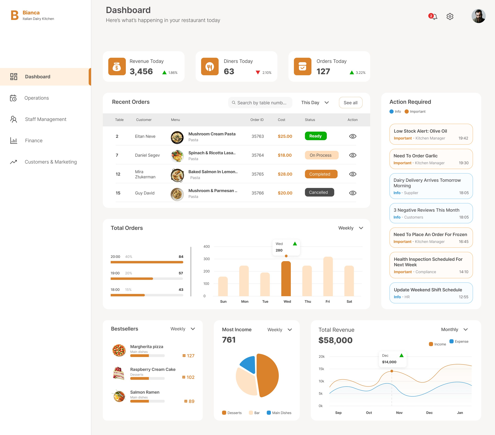
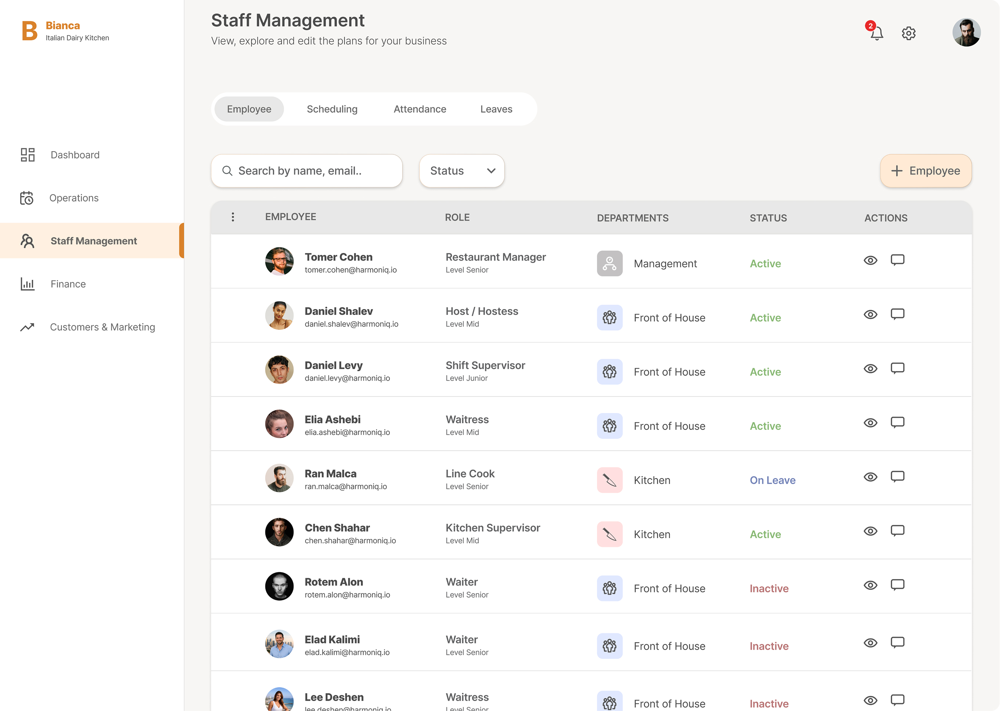
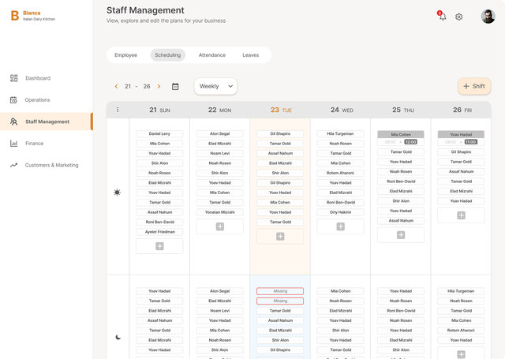

Bianca — a restaurant management dashboard
48 managers and 572 employees reported the exact same problem — and no one had solved it.

Two weeks. Two sides of the same system.
To understand why running a restaurant feels so chaotic, I ran a research sprint — surveying managers and employees separately, then cross-referencing their frustrations. The scale of the problem came through immediately.
The research revealed the real problem wasn't missing information — it was cognitive load: in existing interfaces, urgent and trivial blend together.
The same pain, experienced from opposite directions
- Hard to see who's working when
- High employee turnover creates constant last-minute changes — sickness, sudden unavailability, people quitting, exams — and each one demands immediate clarity that isn't there
- No overall picture of the week — because everything runs in duplicate, split between a shared WhatsApp group and separate personal messages
- Unclear when I'm working
- Changes arrive last-minute
- No overall picture of the week
A dashboard built for decisions, not just data display
I chose a central dashboard over separate reports because the research showed managers need to decide fast in the morning — not analyze deeply. The dashboard is built around action: what needs attention right now.

Separating critical from important. To reduce the cognitive load the research identified, I clearly separated Critical Alerts — shown first, at the top — from Important and Informational Alerts shown below. Urgent things look urgent. Routine things don't compete.
Menu, inventory, and ordering — unified
Previously, managers had to jump between three disconnected sections to manage the daily flow of ingredients and supplies. I unified Menu management, Inventory, and Purchases into a single operational category — so a manager can move from "what do we have" to "what do we need to order" in one place, without context-switching.
Built for high turnover
High employee turnover is one of the most consistent pain points managers reported. I built a dedicated Staff section with full transparency: who's active, who isn't, and how to quickly find and edit any record. An add-employee flow keeps onboarding fast even when someone joins mid-week.

Scheduling was the other half of the shared problem — both managers and employees reported not having a clear picture of the week. The weekly shift board shows the manager the whole week at a glance, and shows the employee exactly when they're working — instead of information scattered between a WhatsApp group and personal messages. If a shift is understaffed, the system flags it in red, so the manager doesn't discover the problem at the last minute. If an employee ends a shift early, the system automatically bumps them to the top of the list, in gray, with their available hours marked — so re-staffing happens immediately, without manually searching for who's free.

Bianca closed the gap between awareness and action — a system that tells you exactly what to do next.
By separating urgency levels, unifying operations, and making scheduling visible, it transformed a dashboard full of noise into a tool you can act on — without switching tabs, digging through menus, or guessing who's available.